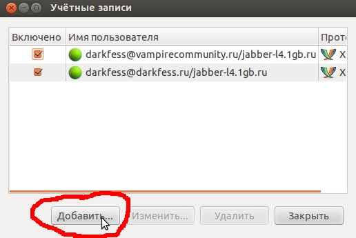
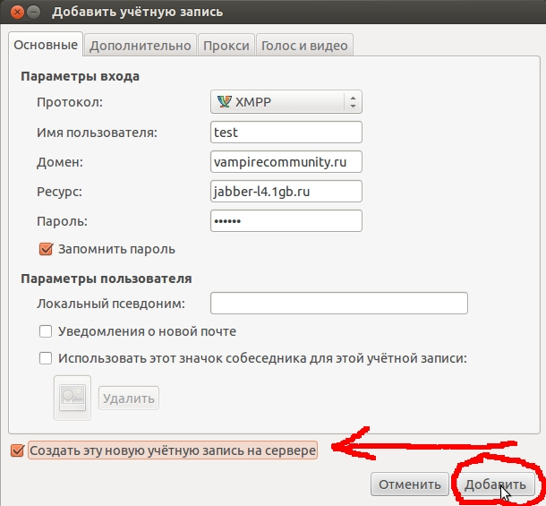
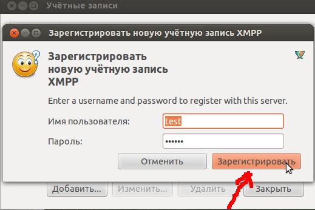
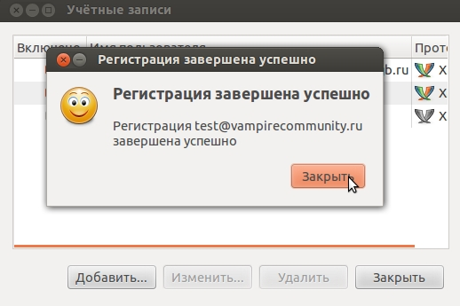

FAQ по регистрации на нашем Jabber сервере
Настройки сервера:
домен: vampirecommunity.rujabber сервер (стандартный): jabber-l4.1gb.ru
jabber сервер (все порты): jabber1-allports.1gb.ru
Jabber сервер - физический адрес сервера. Некоторые Jabber клиенты требуют указать этот адрес в явном виде. Доступен Jabber сервер, принимающий соединения на любых TCP портах (например, даже стандартный порт 80 или 443). Его адрес содержит в себе имя allports (смотрите таблицу выше). Попробуйте порт 443.
Регистрация на сервере, показана на примере IM-клиента Pidgin.

Все точно так же... Только логин и пароль свой придумайте:



Вот и все! Ничего сложного, правда? Ваша учетная запись готова к работе.
[Наверх]